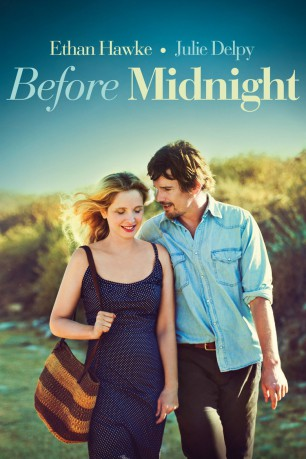
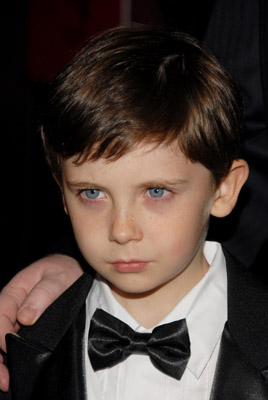

#2280 Before Midnight
Auszeichnungen: für 1 Oscars nominiert
 
 IMDB-Wertung: 7.9 / 10
IMDB-Wertung: 7.9 / 10  Metascore: 94
Metascore: 94 
Neun Jahre sind vergangen, seit Jesse sein Flugzeug zurück in die Vereinigten Staaten verpasst hat, um stattdessen bei Celine in Paris zu bleiben. Nun verbringen der amerikanische Schriftsteller und die impulsive Französin ihren Sommerurlaub bei Freunden in Griechenland. Doch der letzte gemeinsame Abend verläuft nicht wie erhofft und schließlich stehen beide vor der Frage, ob es für ihre Liebe überhaupt noch eine Zukunft gibt.
Jahr: 2013
Dauer: 109 Minuten
FSK: 6
Land: USA Studio: Sony Pictures ClassicsTonspuren: DTS - ,
Untertitel:
Auflösung: 1080p (1920x1040) Größe: 7813 MB
Genre: Drama, Liebe
Regisseur:  Richard Linklater
Richard Linklater
Drehbuch: Richard Linklater, Julie Delpy, Ethan Hawke, Richard Linklater, Kim Krizan
Soundtrack: Graham Reynolds
Darsteller:
 Ethan Hawke als Jesse
Ethan Hawke als Jesse Julie Delpy als Celine
Julie Delpy als Celine-  Seamus Davey-Fitzpatrick als Hank
 Ariane Labed als Anna
Ariane Labed als Anna- Yiannis Papadopoulos als Achilleas
- Athina Rachel Tsangari als Ariadni
- Panos Koronis als Stefanos
- Yota Argyropoulou als Hotel Clerk
- Tety Kalafati als Air Stewardess , uncredited
- John Sloss als Airport Traveller in Opening Scene , uncredited
- Jennifer Prior als Ella
- Charlotte Prior als Nina
- Xenia Kalogeropoulou als Natalia
- Walter Lassally als Patrick
- Enrico Focardi als Child
- Manolis Goussias als Child
- Anouk Servera als Child
- Serafeim Radis als Hotel Clerk
Datei: X:\3-Trilogie(A-F)\Before Sunrise-Sunset-Midnight\Before Midnight (2013, FSK6, 1920x1040).mkv seit 26.10.2015
Festplatte: HD Collection-2(A-Z)-3(A-M)
 Alle Filme aus Gruppe '3-Trilogie(A-F)\Before Sunrise-Sunset-Midnight'
Alle Filme aus Gruppe '3-Trilogie(A-F)\Before Sunrise-Sunset-Midnight'